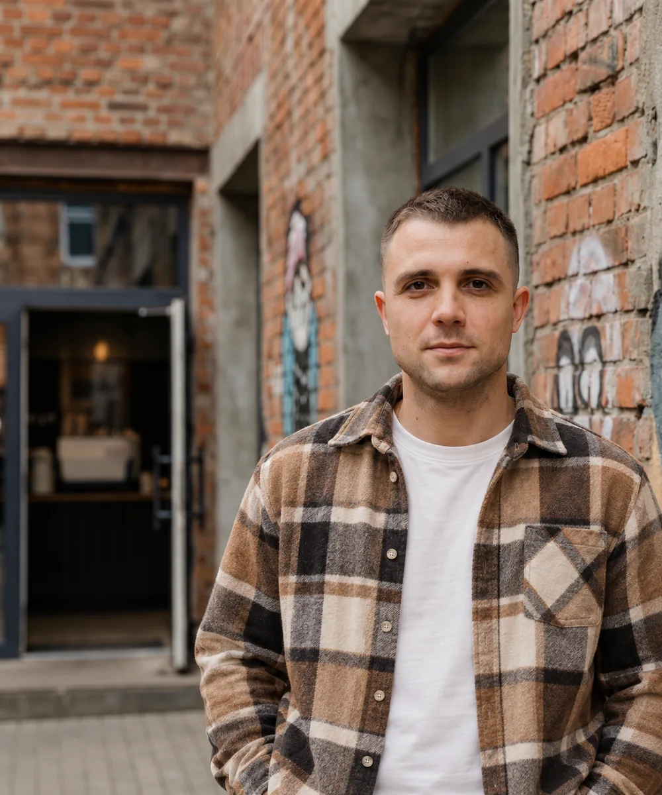
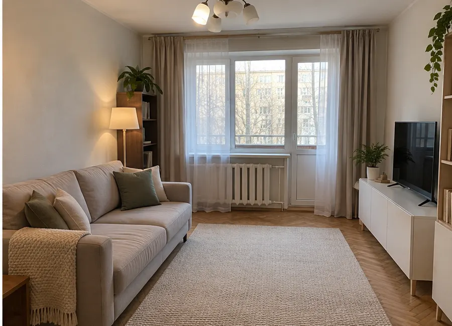
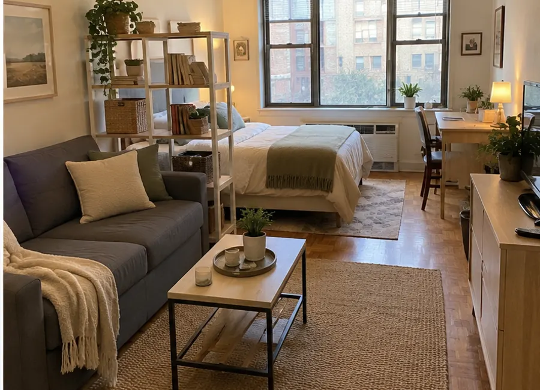
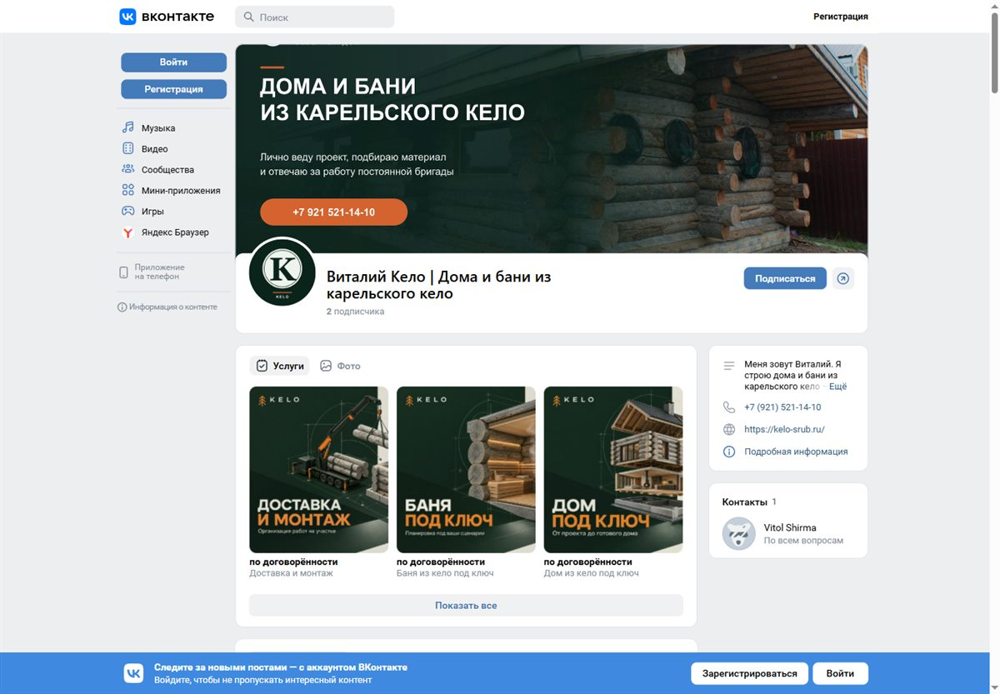
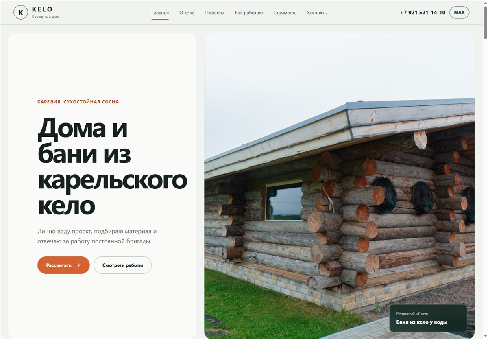
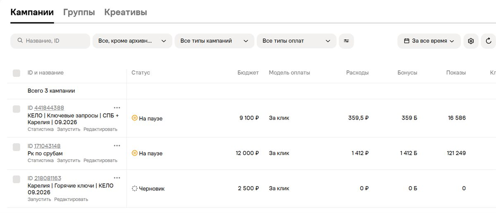
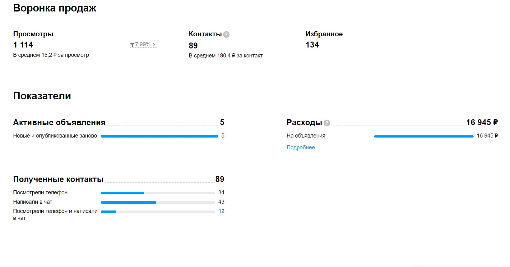
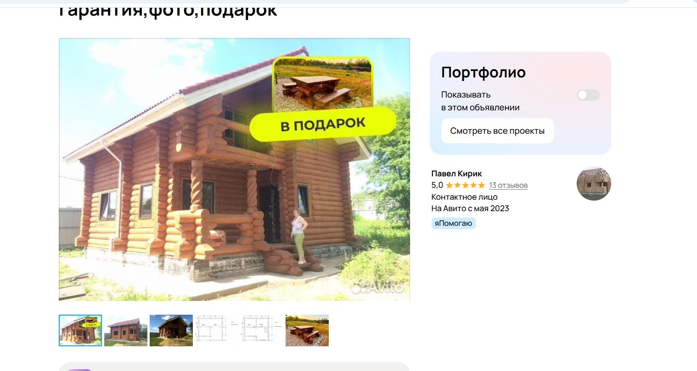
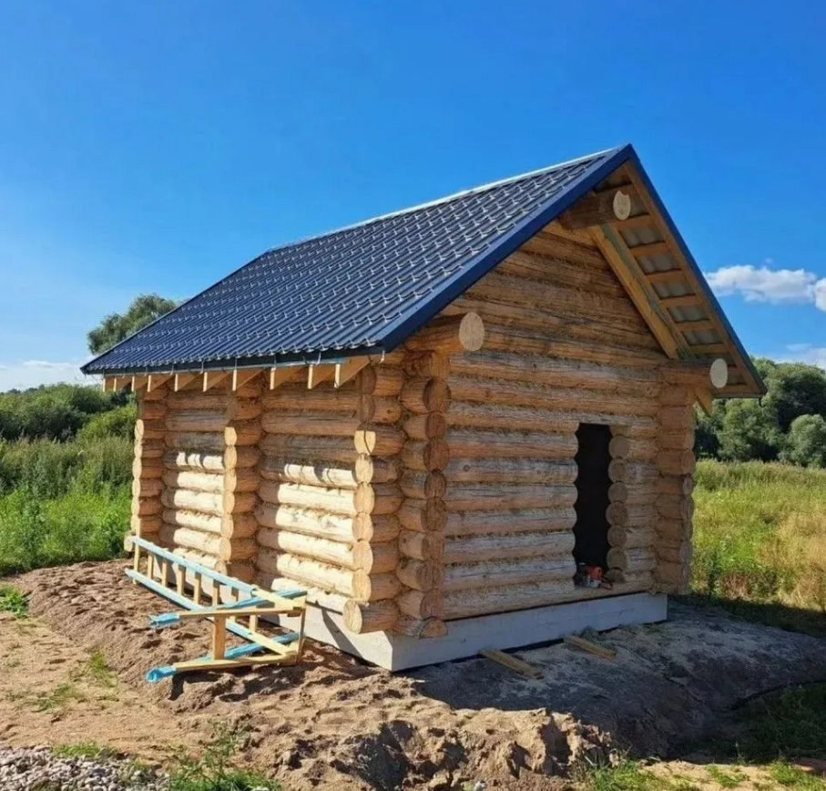
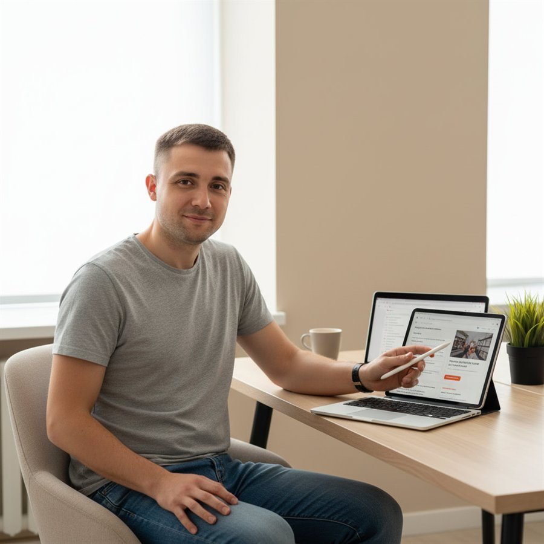

Сайт под ключ
Продумываю структуру, пишу тексты, собираю дизайн, адаптирую под телефон и публикую.
Digital для малого бизнеса
Помогаю показать вашу работу понятно: от одной обложки или подбора мебели до сайта, сообщества VK и объявления с продуманным предложением.

Один контактобщение напрямую со мной
Одна логикавсе площадки работают вместе
Понятный запускбез сложных форм и лишних этапов
Что могу сделать
Выбираем только то, что сейчас поможет вашему бизнесу выглядеть сильнее и получать обращения.
Продумываю структуру, пишу тексты, собираю дизайн, адаптирую под телефон и публикую.
Анализ ниши, объявления, города, профиль и продвижение.
Главная карточка и серия до 6 изображений в едином стиле.
Обложка, описание, витрина услуг, закреплённый пост и структура контента.
Собираю кампании, аудитории, тексты и креативы. Анализирую первые данные и корректирую связку.
Разбираю сайт, Avito, сообщество или рекламу и даю план действий по приоритету.
Можно начать с одной задачи. Откройте нужную услугу и посмотрите состав, исходные материалы и результат. Срок и окончательный объём согласуем после просмотра вашей задачи.
Когда понравившиеся вещи не складываются в одну комнату, легко потратить деньги на мебель, которая не подойдёт по размеру или стилю.
Для одной комнаты подберу до шести предметов. Передам список с габаритами, ссылками на магазины и коротким пояснением выбора. Ссылки и цены проверю на день сдачи; перед покупкой их нужно перепроверить.
Ищу практичные предметы в согласованном диапазоне и показываю, на чём можно сэкономить без потери удобства. Состав результата тот же: до шести предметов, размеры и ссылки.
Подбираю вещи в более высоком ценовом сегменте с акцентом на материалы и сочетание. Состав результата также согласуем до старта; дорогой сегмент сам по себе не увеличивает число предметов.
Ориентир по сроку: 2-4 рабочих дня после получения материалов. Нужны 2-4 фото, размеры комнаты и сохраняемой мебели, ориентир бюджета. Один раунд небольших замен включён. Покупка, доставка и точный обмер не входят.

Диван и шкаф могут помещаться по размерам, но мешать проходу или работе за столом.
По плану и фото одной комнаты подготовлю две простые схемы: например, больше свободного места или больше хранения. К каждой добавлю короткое сравнение удобства и проходов. Один раунд небольших правок включён.
Ориентир по сроку: 1-3 рабочих дня после получения плана и фото. Нужны размеры стен, дверей, окон и мебели, которую оставляем, плюс 2-4 фото. По одному фото без замеров точную схему не обещаю. Это эскизная идея, не технический проект; решения нужно проверить на месте.

Когда услуги, фото и условия разбросаны по сообщениям, клиенту трудно быстро понять ваше предложение.
Соберу 5-7 слайдов в одном стиле и передам PDF для отправки и PPTX для дальнейших правок. Один раунд небольших изменений включён.
Точный порядок и число слайдов определим по вашим материалам. Не выдумываю отзывы и результаты.
Ориентир по сроку: 2-4 рабочих дня после получения материалов. Нужны описание услуг, свои фото, условия, цены или способ расчёта, контакты и логотип при наличии. Большой фотоархив и дополнительные слайды обсуждаются отдельно.

Если клиенту приходится выпрашивать прайс, искать примеры и спрашивать, как связаться, часть разговоров обрывается.
Соберу три связанных материала: прайс-лист в одной картинке, один кейс из трёх карточек по вашей реальной работе и адаптивную страницу об одной услуге с кнопками связи.
Ориентир по сроку: 5-8 рабочих дней после получения материалов. Нужны список услуг и условий, фото, факты для кейса и контакты. Размещение страницы согласуем заранее. Домен, платный хостинг, CRM, форма заявки и приём платежей не входят. Фото «до» не выдумываю.

Если объявление показывается, но не приводит к разговору, начну с разбора категории, обложки, текста, цены и статистики. Затем можно оформить одну карточку под ключ или заняться профилем и продвижением. Для ставки и дневного лимита смотрю ваш текущий экран кабинета, не обещаю определённое число заявок.
Ориентир после получения доступа и материалов: разбор до 1 рабочего дня, сборка одного объявления 1-2 рабочих дня. Рекламный тест требует отдельного времени на накопление статистики; точный срок и бюджет согласуем до запуска.
Смотреть кейс AvitoЕсли группа выглядит пустой или рекламный переход не объясняет, почему обратиться к вам, помогу собрать связку: обложка, описание, услуги, закреплённый пост и путь к сообщению.
Ориентир на оформление группы: 3-5 рабочих дней после получения материалов. Подготовку и запуск рекламы оценю отдельно после проверки доступа к кабинету; затем нужно время на первые данные. Рекламный бюджет оплачивается площадке отдельно, результат заявок не гарантируется.
Смотреть оформление VKКогда предложение живёт в переписке, превращу его в отдельный понятный файл или страницу.
По фото комнаты также могу показать идею ремонта или виртуальную меблировку. Это визуализация, не технический проект и не выполненный ремонт.
Смотреть интерьерыОтсчёт начинается, когда у меня есть исходные материалы и мы согласовали состав работы. Точную дату назову до старта, чтобы не обещать её по одной фотографии или короткому сообщению.
Кейсы
Показываю не абстрактные обещания, а реальные экраны сайтов, сообществ, объявлений и рекламных кабинетов.
01 · упаковка с нуля
С нуля собрал цифровую упаковку компании по строительству домов и бань из сухостойной сосны кело.
Не было сайта, оформленного сообщества VK, единого визуального стиля и рекламной системы.
Появились сайт, сообщество, рекламные материалы и понятный путь от знакомства до сообщения.

137 835показов в двух запущенных кампаниях
1 771,5 ₽расход на зафиксированном этапе теста
3 каналасайт, сообщество и реклама в одной системе
02 · Avito и VK для строительства
Для компании из Великого Новгорода собрал понятную систему продвижения срубов домов и бань: объявления Avito, ведение аккаунта, сообщество VK и рекламные запуски.
Avito приносил 2–4 заявки в месяц, а объявления, фотографии и продвижение работали без единой системы.
Пересобраны объявления и профиль, настроено продвижение, а VK стал отдельной точкой доверия и контакта.



89контактов в зафиксированной статистике Avito
190,4 ₽средняя стоимость контакта на этом срезе
5 объявленийактивно на момент сохранения отчёта

Обо мне
Сам погружаюсь в задачу, собираю материалы и довожу работу до публикации. Вы всегда знаете, кто отвечает за проект.
Можно начать с аудита или одной обложки. Если нужна вся система, соберу сайт, сообщество и рекламу в одной логике.
Обсудим задачу
Напишите, что хотите изменить. Предложу понятный следующий шаг без долгого брифа и созвона на старте.